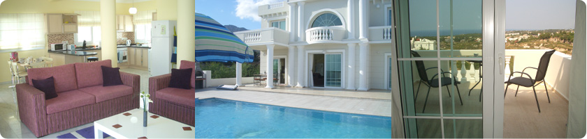

North Cyprus Catalkoy, Kyrenia
“Situated in the wonderful unspoilt and undeveloped region that is North Cyprus.”
“Unlike in the south of the island and in many European holiday destinations, North Cyprus retains character and charm and a more relaxed way of life, but more than rivals them for history, activities and attractions.”
Best location in North Cyprus! Superb 3 bedroom villa situated in prime North Cyprus location with great sea and mountain views, on small development. Sleeping up to 8, there is everything you need for the perfect family holiday including private pool. Centrally positioned it is just a short walk to transport, shops, restaurants etc. Close to beaches and all attractions and just 10 minutes to picturesque Kyrenia.
